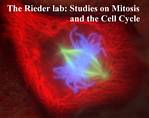

The Rieder Lab: Studies on Mitosis and the Cell Cycle
Research Summary and Focus
"The cell is always speaking--the secret is to learn its language"
(Dr. A.S. Bajer to C. L. Rieder as the latter was starting his graduate work in 1972).
"Even a blind chicken can sometimes find a piece of corn if you put it in front of its nose"
(A.S. Bajer to C. L. Rieder as the latter was finishing his graduate work in 1977).
Mitosis--A General background
Mitosis (or the division of threads) is the term used by Flemming (1879) to describe the progressive and visible structural changes that occur in the cell nucleus as it divides--which happens in the adult human approx. 25 million times every second! Subsequently, the definition of mitosis was expanded to also include division of the cytoplasm (cytokinesis) which occurs during or just after nuclear division. During division of the nucleus (karyokinesis) the replicated chromosomes, that contain the genetic blueprints (i.e., DNA) for the organism, are segregated equally into two daughter cells. Errors in this process produce daughter cells containing unequal numbers of chromosomes (i.e., aneuploid cells) that can ultimately lead to birth defect syndromes and cancers.
During mitosis the cell constructs a transient but elaborate bipolar microtubule-based structure, known as the spindle, that produces and directs the forces for chromosome motion (see picture on home page). The spindle is also involved in defining the plane along which the cell will ultimately pinch in half (i.e., the cleavage furrow). Spindle formation in vertebrate cells involves an interaction between the replicated and separated centrosomes, or spindle poles, and the kinetochores---two tiny plate-like structures that are located on opposite sides of each replicated chromosome. Clearly, in order to understand how mitosis works one needs to understand the structure, function and composition of centrosomes and kinetochores, and how these cellular organelles interact---all of which are topics of research in our laboratory.
One of the major goals of mitosis research is to define the molecular mechanisms responsible for chromosome motion. In this context models for this process must be consistent with how chromosomes behave in the living cell--and this behavior is constantly being redefined as new microscopic technologies are developed. In our lab we use state-of-the-art light microscopic approaches to define the behavior of normal and experimentally manipulated cells, and subsequent 3-D electron microscopic approaches to determine the structural correlations that underlie this behavior.
Cells That We Use In Our Studies.
For our cell-based studies we use material from two different vertebrates--and the choice depends primarily on the goal of the study. When examining the behavior of centrosomes and chromosomes we use Taricha granulosa (newt) pulmonary epithelial cells which we grow in primary culture from lung explants (see C.L. Rieder and R. Hard, Internat. Rev. Cytol., 122:153-220, 1990). These hearty cells are the largest in the vertebrate kingdom and are the most amenable for high resolution light microscopic studies. Because of their size they are not, however, particularly fun to work with at the EM level.
Left: Hermit the newt (Taricha). Right: Differential interference contrast photomicrograph of a living and dividing newt lung cell.
We also use cells from the PtK1 line (2N = 11) which was originally established from a female rat kangaroo (Potorous tridactilus) kidney (the PtK2 line, in which 2N = 14, was established from a male rat kangaroo kidney). The cells in this line are large, contain only 11 chromosomes, and under the proper culture conditions they remain flat throughout mitosis. However, once grown beyond passage #100 (starting at #62), we throw them out and thaw new ones. It is our experience that no matter what the culture conditions, PtK1 cells get progressively "sicker" as the line ages (something like Hayflick's syndrome). In this context the checkpoint control that inhibits anaphase onset in the presence of unattached kinetochores (see below), is strong in low passage number cultures but it appears to get sloppier as the passage number increases past 100.
Left:
Betty the rat-kangaroo as seen in her natural habitat
(she's a marsupial from Tasmania and should not be
confused with kangaroo-rats which are found in the S.W.
U.S.).
Right: A rat-kangaroo kidney epithelial
(PtK1) cell in the process of dividing. This cell comes
from a line originally derived by K.H. Walen in October
1962!
After watching many newt lung and PtK1 cells divide we are convinced that both type of cells, and indeed all vertebrate somatic cells, play by the same rules, i.e., there are no discernible differences between cells from different vertebrates in how the spindle forms or in how the chromosomes behave throughout the division process.
The Centrosome or "Central Body" (Boveri and Van Beneden, ~1880)
At the end of mitosis each cell inherits a single centrosome which had defined one of the poles of the former spindle. In the non dividing (interphase) cell this centrosome organizes an elaborate array of cytoplasmic microtubules that are used as roadbeds for transporting material.
High voltage electron micrograph of a thick (0.50 um) section cut from a PtK1 cell that has almost completed the division process. The two daughter cells remain connected by a midbody and a centrosome (arrow) can be seen near the surface of one of the newly generated G1 nuclei.
Left:
Higher magnification of the centrosome associated with the
newly divided cell shown above.
Right: A PtK1 centrosome that
is in the process of replication. Note that a primary
cilium is associated with the oldest centriole.
In growing cells the centrosome is normally replicated near the time of DNA synthesis (when the chromosomes are replicated). Obviously, this process is carefully controlled because too few or too many centrosomes lead to monopolar or multipolar spindles (and aneuploidy). Part of our research involves studying the composition and structure of centrosomes, how they work, and how their numbers are controlled. For the most part these studies are conducted on sea urchin zygotes in collaboration with Dr. Greenfield Sluder (Worcester Foundation for Biomedical Research, Shrewsbury, MA), and in lysates of surf clams oocytes in collaboration with Dr. Robert Palazzo (Univ. of Kansas, Lawrence). Much of this work is done during the summer months at the Marine Biology Laboratory in Woods Hole, MA.
3-nm thick slice, through a 3-D computer generated tomographic volume, of an isolated Spisula centrosome. This tomogram was generated from over 100 electron micrographs, shot at various tilt angles, in our new 400 kV intermediate voltage electron microscope. 3-nm is about the thickness of 20 water molecules.
Once replicated the centrosome acts as a single functional unit until the onset of mitosis. During the first visible stages of mitosis the replicated chromosomes begin to condense within the nucleus. Near the end of this prophase stage the two replicated centrosomes begin to separate to define the poles of the nascent spindle. This separation is coincident with the destruction of cytoplasmic microtubules and with the nucleation, by each centrosome, of a robust radial array of dynamically unstable microtubules known as an aster.
Two centrosomes, and their forming radial arrays of astral microtubules, separating on the surface of an early prophase newt lung cell nucleus. In this dual exposure epi-fluorescent picture, and those that follow, the cell was fixed in glutaraldehyde and stained for indirect immuno-fluorescent localization of spindle microtubules using a antibody to alpha tubulin. The chromosomes were stained with Hoechst 33342.
The breakdown of the nuclear envelope liberates the chromosomes into the cytoplasm where they interact, via their kinetochores (see below), with the asters to form the spindle.
Left: An early
prometaphase newt lung cell in which the asters are
interacting with the kinetochores on the chromosomes to
form the spindle.
Right: A mid-prometaphase newt lung cell
in which many chromosomes have already acquired a bipolar
attachment, and are positioned on the spindle equator,
while others remain attached to a single pole.
The Kinetochore (Sharp, 1939)
At the time of nuclear envelope breakdown each replicated chromosome possesses two sister kinetochores that are positioned on opposite sides of the chromosome. These kinetochores attach the chromosome to the spindle by trapping microtubules growing from the asters. Over time each kinetochore acquires a bundle of microtubules, known as a kinetochore fiber, that provides a scaffold for transmitting and/or producing the forces for poleward chromosome motion. Exactly how these forces are generated remain to be determined and is another subject of our research efforts.
Left: A newt
lung cell in metaphase of mitosis. Note the bundles of
microtubules that attach the sister kinetochore to the
opposing spindle poles.
Right: Thick section, photographed with
our high voltage electron microscope, through a metaphase
spindle in a PtK1 cell.
Once both the sister kinetochores become attached to the opposing spindle poles the chromosome moves or "congresses" to the equator of the forming spindle. Again, the mechanism(s) by which the forces are produced and balanced during congression remain ambiguous and are a subject of our research efforts. Laser microsurgery experiments from our laboratory, and that of our collaborator Dr. E.D. Salmon (Univ. of North Carolina, Chapel Hill), reveal that congressing chromosomes are under the influence of two sets of forces. One, known as the polar ejection force or "polar wind", acts along the length of the chromosome to push it away from the closest pole. This force depends on the presence of aster and half-spindle microtubules, and its magnitude appears positively correlated with microtubule density. We believe that it is generated by growing microtubule (+) ends that constantly impact on the chromosome arms, but others feel that it is mediated by microtubule based molecular (kinsein-like) motors that reside along the chromosome arms.
The other force component for congression is pole-directed and acts on the kinetochore. It is produced by the kinetochore and/or by the kinetochore fiber--but the relative contributions of each remain controversial and may differ between organisms. Recent experiments from our laboratory reveal that when not experiencing a poleward directed force, the kinetochore on a congressing chromosome exists in a "neutral" state that allows it to coast away from its associated pole on the tips of elongating kinetochore fiber microtubules (Khodjakov and Rieder, 1996). In this manner when one of the kinetochores on a congressing chromosome is moving towards its pole, the other is coasting away from its pole in response to the proximal polar ejection field and the poleward motion of its (opposing) sister kinetochore. The stimulus that induces kinetochores to switch between poleward and neutral states remains to be determine, but it likely involves tension.
A dogma of mitosis is that a chromosome must have two sister kinetochores in order to congress. Indeed, chromosome biorientation, in which the sister kinetochores acquire an attachment to the opposing spindle poles, is considered to be a prerequisite for and a hallmark of a congressing chromosome. However, we have recently shown that chromosome fragments that contain only one kinetochore, created in living mitotic cells by laser microsurgery, often congress (Khodjakov et al. ,1997)! This result implies that kinetochores consist of multiple identical subunits, that the activity of these subunits is independently regulated, and that each contains the complete molecular machinery for kinetochore function.
After all of the replicated chromosomes become aligned near the spindle equator they separate or "disjoin" into individual chromatids. These then move towards their respective poles in a process known as anaphase. We believe that the poleward motion of anaphase chromosomes is likely powered by the same mechanism that produces the poleward directed forces for congression--but others disagree. It is also likely that during this time the polar ejection forces diminish, disappear or are redirected.
Left: A newt lung cell in very early anaphase. Right: A Similar cell in mid to late anaphase.
Checkpoints Controlling Progress Through the Mitosis Portion of the Cell Cycle.
The cell cycle is defined as the series of events that prepare a growing cell for division. Progress through the cell cycle is regulated by a series of "checkpoint controls" that slow or arrest the cell cycle until the event(s) being monitored are completed. Recently it has become evident that progress through the mitosis portion of the cell cycle is also regulated by checkpoints and this is an area that our laboratory is also actively involved in.
In vertebrate somatic cells the first mitosis checkpoint controls nuclear envelope breakdown and thus entry into prometaphase--which represents the first point of no return during mitosis. This checkpoint is likely related to the RAD 9 checkpoint that arrests the cell cycle in response to DNA damage. Nuclei that are excessively irradiated up until late prophase return to interphase, but after late prophase they proceed into prometaphase regardless of the radiation level.
The first mitotic checkpoint: Damaging the chromosomes in mid-prophase cell (by e.g., UV light or laser irradiation --0:01(hours:minutes)) sends the cell back into interphase (6:39) until the damage is repaired
Work from our lab, and those of others, demonstrates that entry into anaphase (and thus exit from mitosis) is also controlled by a checkpoint (see, Rieder et al. , 1995). This checkpoint monitors kinetochore attachment and a single unattached kinetochore is sufficient to inhibit anaphase onset in PtK1 cells for many hours. At present the molecular events associated with kinetochore attachment that are monitored by this checkpoint are unknown, but they likely involve tension at the kinetochore generated as it acquires microtubules and begins to experience poleward forces.
The target of the inhibitory signal released by unattached kinetochores is also unknown. However, ongoing work in our laboratory on cells containing two independent spindles (Rieder et al., 1997) indicates that this target is closely associated with the spindle containing the unattached kinetochore.
Mitosis in an untreated PtK1 cell that contains two independent mitotic spindles. In two years were able to find only 4 of these cells! However, they are commonly found in cultures 19-20 hours after fusing neighboring cells with an electric field.